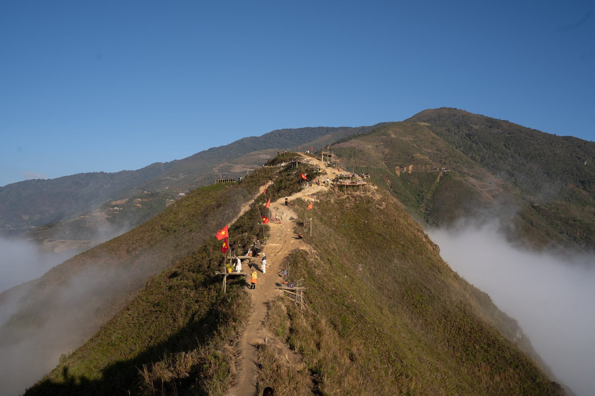
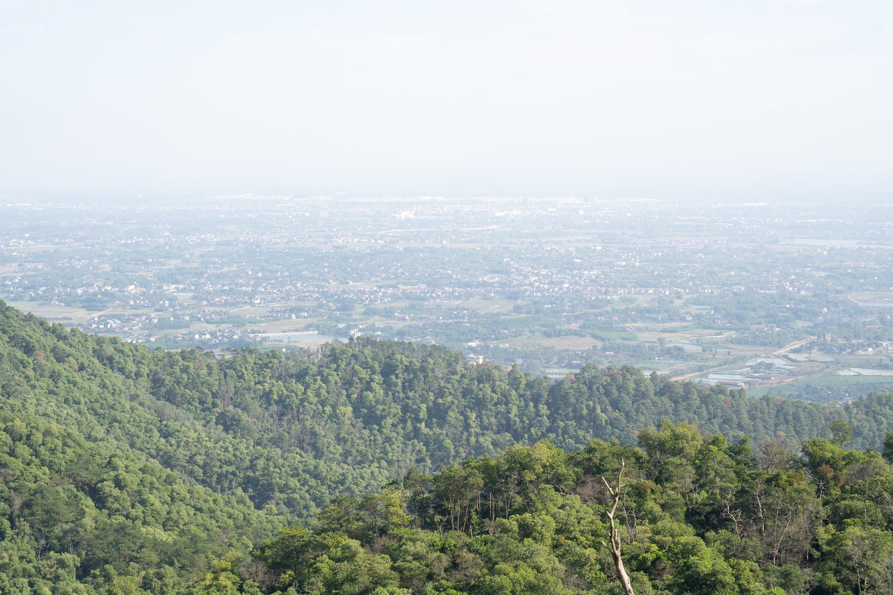
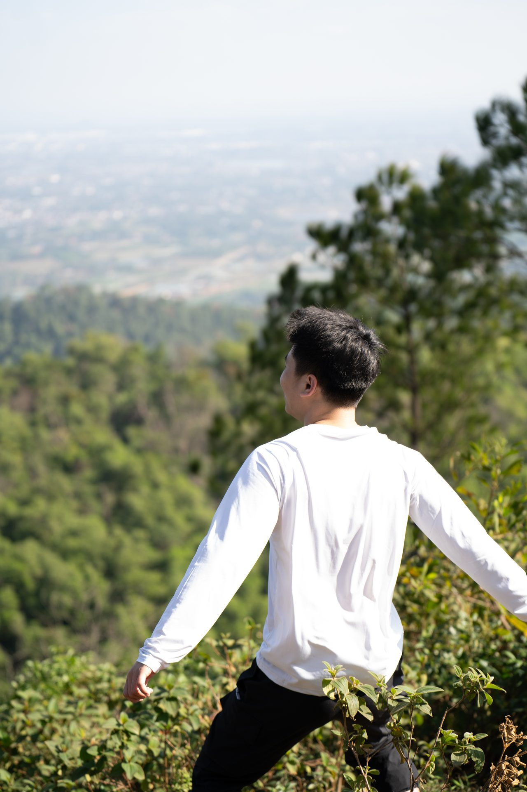

The Photographer
Chasing light across Vietnam
Between mountains and coastlines, I carry a camera. Amateur, self-taught, and happily lost in golden hour.
Tà Xùa
January 2026Tà Xùa is a highland destination in northern Vietnam celebrated for its mountain scenery and seas of cloud. January falls within its best-known cloud-hunting season.




Lào Cai
June 2026From the busy streets of Sa Pa to the rice terraces and wooden homes of Tả Van, a village in the Mường Hoa Valley at the foot of the Hoàng Liên Sơn range.


Phú Yên
April & May 2026A coastal province in central Vietnam known for secluded beaches, rocky headlands, fishing communities, and a long shoreline.


Hàm Lợn Mountain
March 2026A popular trekking destination in Sóc Sơn, Hanoi — taken during a hike through its forested landscape and up to the summit.



Moments
2025The frames in between — a festival night, and the people who matter most.